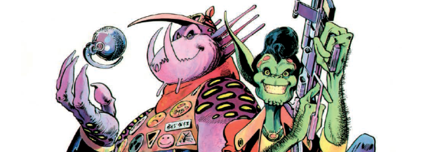

Animal House crossed with American Graffiti with a side-helping of A Streetcar Named Desire, but in space and starring alien sociopaths.
Art by Alan Davis
| Story Title | Parts | Pages | w indicates a wraparound coverCovers | Year(s) | Issues | Writer | Artist | Colourist | Letterer |
|---|---|---|---|---|---|---|---|---|---|
From Tharg's Time TwistersD.R. and Quinch Have Fun on Earth | 1 | 6 | 0 | 1983 | Reprints: M4.01317 | Alan Moore | Alan Davis | [b&w] | Steve Potter |
| Go Straight | 2 | 12 | 350: Alan Davis 1 | 1984 | Reprints: M4.01350-351 | Alan Moore | Alan Davis | [b&w] | Steve Potter |
| Go Girl Crazy | 3 | 15 | 352: Alan Davis 1 | 1984 | 352-354 | Alan Moore | Alan Davis | [b&w] | Steve Potter |
| Get Drafted | 5 | 24 | 0 | 1984 | 355-359 | Alan Moore | Alan Davis | [b&w] | Steve Potter |
| Go to Hollywood | 5 | 25 | 0 | 1984 | Reprints: M4.03 363-367 | Alan Moore | Alan Davis | [b&w] | Steve Potter |
| Get Back to Nature | 1 | 6 | 0 | 1985 | Reprints: M4.03 2KYB'94 SFS8 | Alan Moore | Alan Davis | Last 2pp in colour. <-- | Steve Potter |
Full title: "D.R. & Quinch's Incredibly Excrutiating Agony Page".D.R. & Quinch's Agony Page | 9 | 9 | 0 | 1987 | Reprints: B2KSE1 FCBD3 (partial) 525-530, 532-534 | Alan Davis Jamie Delanovarious | Alan Davis (P) Mark Farmer (I)various | Mark Farmer | Steve Potter: 1‑4, 7‑9 Jack Potter: 5‑6 various |
| Hijack Free Comic Book Day | 1 | 6 | 0 | 2018 | Reprints: 2KRC1FCBD8R | various | Indio! | Dom Regan | Colin Bell |
| >> Posters << | |||||||||
Star Pin‑Up.Crazy Chrissie | 1 | 1 | 0 | 1984 | 360 | n/a | Alan Davis | <-- | n/a |
Star Pin‑Up.D.R. & Quinch | 1 | 1 | 0 | 1984 | 369 | n/a | Alan Davis | <-- | n/a |
Star Laser Scan. Collectible poster.D.R. & Quinch | 2 | 2 | 0 | 1984 | 375-376 | n/a | Alan Davis | <-- | n/a |
Star Pin‑Up.Pulger | 1 | 1 | 0 | 1984 | 377 | n/a | Alan Davis | <-- | n/a |
Multi‑part poster.2000AD Calendar 1985 | 2 | 2 | 0 | 1985 | 401-402 | n/a | Alan Davis | <-- | n/a |
| We Missed You | 1 | 1 | 0 | 1987 | 522 | n/a | Alan Davis | <-- | n/a |
| D.R. & Quinch | 1 | 2 | 0 | 1987 | SFS10 | n/a | Alan Davis | <-- | n/a |
Star Scan.[Crazy Chrissie] | 1 | 1 | 0 | 1987 | 536 | n/a | Jenna Higgins John Higginsvarious | <-- | n/a |
From Great Moments in Thrill‑PowerD.R. & Quinch Go to Hollywood | 1 | 1 | 0 | 2007 | 1526 | n/a | Boo Cook | <-- | n/a |
| >> Floating Covers << | |||||||||
| A Merry Xmas From D.R. & Quinch | 1 | ~ | 1w | 1985 | 450 | n/a | Alan Davis | <-- | n/a |
| >> Features << | |||||||||
From Tharg's Datachips#3: D.R. & Quinch | 1 | 0.5 | 0 | 1996 | 986 | n/a | Alan Davis | <-- | n/a |
| year | episodes | pages |
| 1981 | 0 | 0 |
| 1982 | 0 | 0 |
| 1983 | 1 | 6 |
| 1984 | 15 | 76 |
| 1985 | 1 | 6 |
| 1986 | 0 | 0 |
| 1987 | 9 | 9 |
| 1988 | 0 | 0 |
| 1989 | 0 | 0 |
| 1990 | 0 | 0 |
| 1991 | 0 | 0 |
| 1992 | 0 | 0 |
| 1993 | 0 | 0 |
| 1994 | 0 | 0 |
| 1995 | 0 | 0 |
| 1996 | 0 | 0 |
| 1997 | 0 | 0 |
| 1998 | 0 | 0 |
| 1999 | 0 | 0 |
| 2000 | 0 | 0 |
| 2001 | 0 | 0 |
| 2002 | 0 | 0 |
| 2003 | 0 | 0 |
| 2004 | 0 | 0 |
| 2005 | 0 | 0 |
| 2006 | 0 | 0 |
| 2007 | 0 | 0 |
| 2008 | 0 | 0 |
| 2009 | 0 | 0 |
| 2010 | 0 | 0 |
| 2011 | 0 | 0 |
| 2012 | 0 | 0 |
| 2013 | 0 | 0 |
| 2014 | 0 | 0 |
| 2015 | 0 | 0 |
| 2016 | 0 | 0 |
| 2017 | 0 | 0 |
| 2018 | 1 | 6 |
| 2019 | 0 | 0 |
| 2020 | 0 | 0 |
Comic strip data (excludes other content):